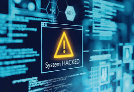

➔ Počítačová kriminalita sú trestné činy zamerané proti počítačom ako aj trestné činy páchané pomocou počítača. Ide o nelegálne, nemorálne a neoprávnené konanie, ktoré zahŕňa zneužitie údajov získaných prostredníctvom výpočtovej techniky alebo ich zmenu. Počítače v podstate neumožňujú páchať nový typ trestnej činnosti, iba poskytujú novú technológiu a nové spôsoby na páchanie už známych trestných činov ako je sabotáž, krádež, zneužitie, neoprávnené užívanie cudzej veci, vydieranie alebo špionáž.

DRUHY KRIMINALITY
1. útok na počítač, program, údaje, komunikačné zariadenie
Fyzické útoky na zariadenie výpočtovej techniky, vymazanie alebo pozmenenie dát, formátovanie pamäťových médií nesúcich dáta, nelegálna tvorba a rozširovanie kópií programov, v štátnych orgánoch únik informácií o občanoch a pod. neoprávnené užívanie počítača alebo komunikačného zariadenia: využívanie počítačovej techniky, faxov, prostriedkov počítačových sietí, databáz a programov zamestnancami firiem a organizácií na vlastnú zárobkovú činnosť.
2. neoprávnený prístup k údajom, získanie utajovaných informácií alebo iných informácií o osobách,..
Prenikanie do bankových systémov, systémov národnej obrany, do počítačových sietí dôležitých inštitúcií a pod. Niekedy táto činnosť spôsobuje priame škody veľkého rozsahu, napr. nelegálne bankové operácie, ako aj nepriame škody spôsobené únikom informácií. V súvislosti s týmto trestným činom môže byť aj súbežný trestný čin ako napr. vydieranie, nekalá súťaž, ohrozenie hospodárskeho tajomstva, vyzvedačstvo, ohrozenie štátneho tajomstva.
4. zneužívanie počítačových prostriedkov k páchaniu inej trestnej činnosti
Manipulácia s údajmi ako napr. zostavy v skladoch, tržby, nemocenské poistenie, stavy pracovníkov, stav účtov a pod., patria sem aj krádeže motorových vozidiel, falšovanie technickej dokumentácie, priekupníctvo, daňové podvody, falšovanie a pozmeňovanie cenín, úradných listín a dokladov, dokonca aj peňazí.
5. podvody páchané v súvislosti s výpočtovou technikou
Využitie niečieho omylu vo svoj prospech (hry s vkladom finančnej čiastky a rozosielaním listov “následníkom” so sľubom zaručeného zisku). Tento druh trestnej činnosti možno vykonávať aj bez použitia výpočtovej techniky, ale s jej použitím je táto činnosť efektívnejšia.
6. šírenie poplašných správ
Vytvorenie poplašnej správy upozorňujúcej na fiktívne nebezpečenstvo. Najčastejším motívom páchateľov tejto trestnej činnosti je pobaviť sa na nevedomosti ostatných, no môže ísť i o správy spojené s páchaním inej trestnej činnosti. Tieto správy sú v počítačovom slangu označovaná ako Hoax.
Zdroje:
PHISING
PHARMING
DIALERY